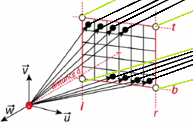

Este proyecto esta dividido en las siguientes secciones:
Conceptos clave
-
Cómo se crea una imágen 3D:
Inicialmente necesitamos entender cómo podemos representar una escena tridimensional con una imágen bidimensional, aunque suena extraño, lo primero que necesitamos es una imagen con una superficie bidimensional con un área determinada. Esta superficie bidimensional, tambien llamada plano de la imagen, es un concepto de computación gráfica utilizado para proyectar una escena tridimensional (equivalente al rollo de una película o al canvas que utilizan los pintores).
-
Generando perspectiva:
La mejor manera the proyectar una figura tridimensional es dibujando lineas desde cada punto/esquina del objeto tridimensional al ojo del espectador. Para mapear la forma del objeto en el canvas, se marca un punto donde cada linea se intersecte con la superficie del plano. Esta operación debe repetirse para todos los bordes del objeto, teniendo como resultado, una representación en 2D del objeto sobre el canvas. Generando nuestra primera imágen de proyección de perspectiva. Si se hace este procedimiento para todos los objetos en una escena, se generará una imágen de la escena proyectada sobre un punto específico.

-
Luz, sombra y color:
El color, brillo y somras en un objeto se da por la initeracción de la luz con el material del mismo. La luz está hecha de fotónes que tienen un componente eléctrico y uno magnético. Los fotónes son emitidos por una variedad de fuentes de luz, el más conocido por todos es el sol. Si un grupo de fotónes llega a un objeto, pueden suceder tres cosas: El objeto los absorbe, los refleja o los transmite. El porcentaje de fotónes reflejados, absorbidos y transmitidos varía dependiendo del material del objeto, sin embargo, se tiene como regla general que el total de fotónes que llegan a un objeto debe ser igual al número de fotones reflejados, más los fotónes transmitidos, más los absorbidos.

Para finalizar, la absorción es responsable de los colores percibidos en un objeto, la luz blanca está compuesta por fotónes "rojo", "verde" y "azul". Si un objeto rojo es alcanzado por luz blanca, el proceso de absorción filtra los fotónes "verde" y "azul", y los fotones rojos son reflejados, por esta razón el objeto parece ser rojo y es perceptible por el ojo humano cuando el rayo reflejado alcanza al ojo de manera perpendicular.
Implementación
El algoritmo de ray tracing toma una imagen compuesta de píxeles. Por cada píxel de la imagen, dispara un rayo primario a la escena. La dirección de ese rayo primario se obtiene trazando una línea desde el ojo hasta el centro de ese píxel. Una vez que tenemos establecida la dirección de ese rayo primario, verificamos cada objeto de la escena para ver si se cruza con alguno de ellos. En algunos casos, el rayo primario se cruzará con más de un objeto. Cuando eso sucede, seleccionamos el objeto cuyo punto de intersección es el más cercano al ojo. Luego disparamos un rayo de sombra desde el punto de intersección hasta la luz. Si este rayo en particular no se cruza con un objeto en su camino hacia la luz, el punto de impacto se ilumina. Si se cruza con otro objeto, ese objeto proyecta una sombra sobre él.
Algoritmos de transporte de luz y ray tracing: Whitted propuso usar estas leyes para calcular la dirección de reflexión y refracción de los rayos a medida que se cruzan con superficies reflectantes o transparentes, y seguir la trayectoria de estos rayos para averiguar el color del objeto con el que se cruzarían. Pueden ocurrir tres casos en el punto de intersección de estos rayos de reflexión y refracción. A continuacion se muestra la funcion castRay que implementa el algoritmo de transporte de luz de whitted.
Resultados
Generación de imagen usando ray tracing.
Generación de imagen usando whitted ray tracing.